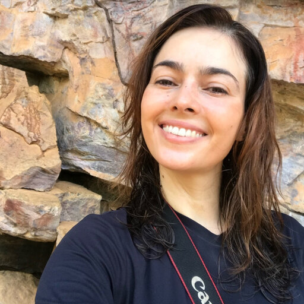

Juliana Gastaldello Rando
Professora Adjunta · Universidade Federal do Oeste da Bahia (UFOB)
Barreiras, Bahia, Brasil
- Sistemática de angiospermas
- Morfologia vegetal
- Filogenética de Leguminosae
- Biogeografia neotropical
- Conservação de plantas
- Campos Rupestres
Sobre
Sua linha de pesquisa é centrada nos estudos em morfologia vegetal e sistemática, com foco na distribuição, conservação e evolução de plantas na região neotropical. Especialista no gênero Chamaecrista (Leguminosae – Caesalpinioideae), trabalhou extensamente com estudos filogenéticos, taxonômicos e biogeográficos do grupo, especialmente em ambientes como os Campos Rupestres e o Cerrado. Graduada em Engenharia Agronômica pela ESALQ-USP, concluiu o mestrado (2009) e o doutorado (2014) em Ciências Biológicas (Botânica) pelo Instituto de Biociências da USP, com orientação de José Rubens Pirani. O doutorado incluiu período sanduíche nos herbários de Nova Iorque (EUA) e do Royal Botanic Gardens, Kew (UK), com orientação de Gwilym Peter Lewis. Realizou pós-doutorado no Royal Botanic Gardens, Kew (2025–2026), bolsista FAPESB.
Curadora do herbário BRBA desde 2015, Juliana também é integrante do grupo LPWG (Legume Phylogeny Working Group), coordenadora do Taxonomy Working Group e editora de área da revista Plant Ecology and Evolution. Membro permanente dos programas de pós-graduação em Ciências Ambientais (PPGCA/UFOB) e em Botânica (PPGBot/UEFS). A colaboração com o LIPA nasce da especialização compartilhada em Chamaecrista — gênero central tanto para a sistemática de Leguminosae quanto para o estudo de interações planta–animal mediadas por nectários extraflorais.
